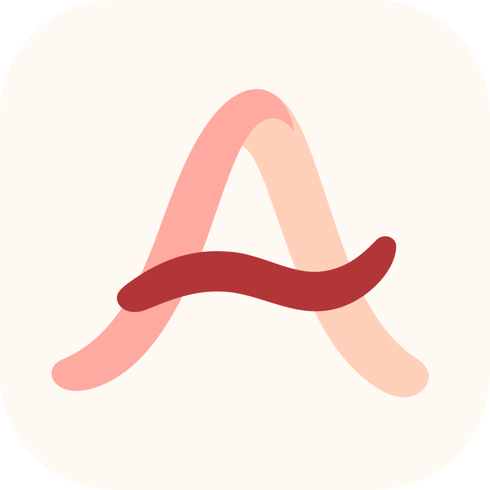

Support
Shared Home Tasks
All the little things, together.
Assorted helps you care for home and family tasks, remember what was last done, and see what needs attention next.
Assorted was previously called Hearthlet and LastDone. Older builds may still show the previous name.
Getting started
- Create a task, choose its recurrence, and optionally enable a reminder.
- Mark it done to record the actual completion time and calculate its next cycle.
- Use Skip This Cycle when a task does not apply. Use Pause Until to pause its reminders until a chosen date; the task stays visible in the Paused section.
Your data
Personal tasks stay on your device, with optional iCloud Drive backup in supported builds. Household sharing uses Apple’s iCloud accounts and only includes tasks you explicitly share. Each person keeps their own reminder settings. No separate Assorted account is required.
Notifications
Open Assorted Settings to check reminder status. If alerts are disabled, open iOS Settings → Notifications → Assorted and allow notifications and alerts.
Delivery timing is ultimately controlled by iOS, Focus modes, and notification-summary settings.
Widgets
Open Assorted once after installing or updating, then add the Assorted widget from the Home Screen widget gallery. If it looks stale, open Assorted to refresh its local snapshot.
Siri and Shortcuts
Open Apple’s Shortcuts app, search for Assorted, and add or run an available action. Examples include “What’s due today in Assorted?” and “When is [task] due in Assorted?”
Siri language support and phrasing can vary by device language and OS version.
Apple Watch
The iPhone is the source of truth. Keep the paired iPhone nearby and open Assorted on both devices after installing. Watch actions are sent back to the iPhone and may wait until connectivity returns.
Household sharing
Open Settings → Household, choose a name, and tap Create Household. Use Invite & Manage People to invite family or your partner through iCloud. Share individual tasks from their details. Existing tasks stay personal until you choose to share them.
Both people need iCloud and compatible app versions. To join, open the owner’s iCloud invitation on your iPhone. After reinstalling, expand Joining or returning? and choose Find My Household in iCloud. In an existing household, use Sync Now if changes are waiting.
Older LastDone 1.0 builds do not include app-level iCloud backup or household sharing.
Household setup needs attention
Check that iCloud is signed in and that your iPhone has an internet connection, then update Assorted and try Create Household again. A setup retry resumes the same household on that iPhone. If it still fails, contact support with the app version and a screenshot of the message.
Personal tasks remain available while household setup is incomplete. You do not need to delete the app or reset your task library.
Accessibility
Assorted is designed to follow system text sizing, light and dark appearances, Reduce Motion, Increase Contrast, Differentiate Without Color, VoiceOver, and Voice Control. The Apple Watch experience uses the accessibility features available on watchOS.
If a common task is difficult with an accessibility setting enabled, please report the screen, setting, device, and what you expected to happen.
Contact support
Email ravinapps@icloud.com with the Assorted version, iOS or watchOS version, device model, steps to reproduce, expected result, and actual result.
Please do not include private task names, notes, or other sensitive information unless it is necessary to explain the issue.
Email Assorted Support